Show the code
pacman::p_load(rgdal, spdep, tmap, sf, ClustGeo,rgeoda,
cluster, factoextra, NbClust,
heatmaply, corrplot, psych, tidyverse,reshape2,hrbrthemes, GGally, ggstatsplot, patchwork)Understanding the difference between traditional clustering algorithm and spatially constrained clustering algorithm.
A regionalization is a specific type of clustering whose goal is to combine data that are comparable in both their statistical characteristics and their geographic locations. Regionalization uses the same logic as conventional clustering approaches in this regard, but it additionally imposes a number of geographical restrictions. These restrictions frequently have to do with connectivity. It is not always necessary for connectedness to be true for all regions, and in some situations it makes sense to loosen connectivity or to impose alternative kinds of geographic restrictions.
For this post, we will examine Traditional Clustering Algorithm and Spatially Constrained Clustering Algorithm to identify its utility and limitations.
For this study, we will use the following packages from CRAN.
For Geographical Analysis and Visualisation the packages used are:
sf - Support for simple features, a standardized way to encode spatial vector data. Binds to ‘GDAL’ for reading and writing data, to ‘GEOS’ for geometrical operations, and to ‘PROJ’ for projection conversions and datum transformations. Uses by default the ‘s2’ package for spherical geometry operations on ellipsoidal (long/lat) coordinates.
tmap - Thematic maps are geographical maps in which spatial data distributions are visualized. This package offers a flexible, layer-based, and easy to use approach to create thematic maps, such as choropleths and bubble maps.
spdep - A collection of functions to create spatial weights matrix objects from polygon ‘contiguities’, from point patterns by distance and tessellations, for summarizing these objects, and for permitting their use in spatial data analysis, including regional aggregation by minimum spanning tree; a collection of tests for spatial ‘autocorrelation’.
ClustGeo - Ward-like hierarchical clustering algorithm including spatial/geographical constraints.
rgdal - Provides bindings to the ‘Geospatial’ Data Abstraction Library (‘GDAL’) and access to projection/transformation operations from the ‘PROJ’ library.
rgeoda - For spatial data analysis based on libgeoda and GeoDa.
For Traditional Clustering Algorithm the packages used are:
cluster - Provides bindings to the ‘Geospatial’ Data Abstraction Library (‘GDAL’) and access to projection/transformation operations from the ‘PROJ’ library.
factoextra - Extract and visualize the output of multivariate data analyses.
NbClust - Determining the Best Number of Clusters in a Data Set.
For Data Wrangling and Simple Visualisation the packages used are:
patchwork - Combine separate ggplots into the same graphic.
tidyverse - Loading the core tidyverse packages which will be used for data wrangling and visualisation.
heatmaply - Cluster heatmap based on plotly.
corrplot - A graphical display of a correlation matrix, confidence interval.
psych - A general purpose toolbox for personality, psychometric theory and experimental psychology.
reshape2 - Flexibly restructure and aggregate data using just two functions: melt and ‘dcast’.
hrbrthemes - Provides typography-centric themes and theme components for ggplot2.
ggstatsplot - An extension of {ggplot2} package for creating graphics with details from statistical tests included in the information-rich plots themselves
pacman::p_load(rgdal, spdep, tmap, sf, ClustGeo,rgeoda,
cluster, factoextra, NbClust,
heatmaply, corrplot, psych, tidyverse,reshape2,hrbrthemes, GGally, ggstatsplot, patchwork)Two dataset will be used for this study:
Humanitarian Data Exchange Portal that consist of all the Level-2 Administrative Boundary (also known as Local Government Area)WPdx Global Data Repositories
We will use the st_read to import the shape file and read_csv to import the aspatial data into the R environment.
nigeria <- st_read(dsn = "data",
layer = "geoBoundaries-NGA-ADM2")
nigeria_attribute <- read_csv("data/nigeriaattribute.csv")
nigeria <- nigeria %>%
select(shapeName) %>%
st_transform(crs = 26391)The practice of correcting or deleting inaccurate, damaged, improperly formatted, duplicate, or incomplete data from a dataset is known as data wrangling. There are numerous ways for data to be duplicated or incorrectly categorized when merging multiple data sources. We willl now proceed to ensure our data is cleaned before conducting our analysis.
Firstly, we will order our dataframe by alphabetical order based on the shapeName. We will then use the duplicated function to retrieve all the shapeName that has duplicates and store it in a list. From the result below, we identified 12 shapeNames that are duplicates.
nigeria <- (nigeria[order(nigeria$shapeName), ])
nigeria<- nigeria %>%
mutate(shapeName = tolower(shapeName))
duplicate_area <- nigeria$shapeName[ nigeria$shapeName %in% nigeria$shapeName[duplicated(nigeria$shapeName)] ]
duplicate_area [1] "bassa" "bassa" "ifelodun" "ifelodun" "irepodun" "irepodun"
[7] "nasarawa" "nasarawa" "obi" "obi" "surulere" "surulere"Next, we will leverage on the interactive viewer of tmap to check the location of each area. Through the use of Google, we are able to retrieve the actual name and state of the areas. The table below shows the index and the actual name of the area.
| Index | Actual Area Name |
|---|---|
| 94 | Bassa (Kogi) |
| 95 | Bassa (Plateau) |
| 304 | Ifelodun (Kwara) |
| 305 | Ifelodun (Osun) |
| 355 | Irepodun (Kwara) |
| 356 | Irepodun (Osun) |
| 518 | Nassarawa |
| 546 | Obi (Benue) |
| 547 | Obi(Nasarawa) |
| 693 | Surulere (lagos) |
| 694 | Surulere (Oyo) |
tmap_mode("view")
tm_shape(nigeria[nigeria$shapeName %in% duplicate_area,]) +
tm_polygons()tmap_mode("plot")We will now access the individual index of the nigeria data frame and change the value. Lastly, we use the length() function to ensure there is no more duplicated shapeName.
nigeria$shapeName[c(94,95,304,305,355,356,519,546,547,693,694)] <- c("bassa kogi","bassa plateau",
"ifelodun kwara","ifelodun osun",
"irepodun kwara","irepodun osun",
"nassarawa","obi benue","obi nasarawa",
"surulere lagos","surulere oyo")
length((nigeria$shapeName[ nigeria$shapeName %in% nigeria$shapeName[duplicated(nigeria$shapeName)] ]))[1] 0Since our aspatial data was imported to a tibble dataframe, we will need to convert it to an sf object. First, we rename the columns for ease of representation using the rename() function from dyplr. We then only retain the columns required for analysis such as the name of the latitude, longitude, status, water_tech_category, usage_capacity, is_urban and water_point_population.
We realised there were NA values within the multiple columns, so we will replace the NA values with Unknown and 0 using the mutate() function.
We will then use the st_as_sf() function to convert the dataframe to an sf object. We will have to input the column that specify the longitude and latitude, and lastly, the CRS projection of the coordinates.
nigeriaT <- nigeria_attribute %>%
rename ("status" = "#status_clean",
"lat" = "#lat_deg",
"long" = "#lon_deg",
"water_tech" = "#water_tech_category") %>%
select (status,lat,long,water_tech,usage_capacity,is_urban,water_point_population) %>%
mutate(status = replace_na(status, "Unknown")) %>%
mutate (water_tech = replace_na(water_tech, "Unknown")) %>%
mutate(water_point_population = replace_na(water_point_population,0))
nigeriaT_sf <- st_as_sf(nigeriaT, coords = c("long", "lat"), crs = 4326)We will now transform the coordinates from 4326 to 26391 projection using the st_transform() function.
nigeriaT_sf <- st_transform(nigeriaT_sf, crs = 26391)
st_crs (nigeria)Coordinate Reference System:
User input: EPSG:26391
wkt:
PROJCRS["Minna / Nigeria West Belt",
BASEGEOGCRS["Minna",
DATUM["Minna",
ELLIPSOID["Clarke 1880 (RGS)",6378249.145,293.465,
LENGTHUNIT["metre",1]]],
PRIMEM["Greenwich",0,
ANGLEUNIT["degree",0.0174532925199433]],
ID["EPSG",4263]],
CONVERSION["Nigeria West Belt",
METHOD["Transverse Mercator",
ID["EPSG",9807]],
PARAMETER["Latitude of natural origin",4,
ANGLEUNIT["degree",0.0174532925199433],
ID["EPSG",8801]],
PARAMETER["Longitude of natural origin",4.5,
ANGLEUNIT["degree",0.0174532925199433],
ID["EPSG",8802]],
PARAMETER["Scale factor at natural origin",0.99975,
SCALEUNIT["unity",1],
ID["EPSG",8805]],
PARAMETER["False easting",230738.26,
LENGTHUNIT["metre",1],
ID["EPSG",8806]],
PARAMETER["False northing",0,
LENGTHUNIT["metre",1],
ID["EPSG",8807]]],
CS[Cartesian,2],
AXIS["(E)",east,
ORDER[1],
LENGTHUNIT["metre",1]],
AXIS["(N)",north,
ORDER[2],
LENGTHUNIT["metre",1]],
USAGE[
SCOPE["Engineering survey, topographic mapping."],
AREA["Nigeria - onshore west of 6°30'E, onshore and offshore shelf."],
BBOX[3.57,2.69,13.9,6.5]],
ID["EPSG",26391]]st_crs (nigeriaT_sf)Coordinate Reference System:
User input: EPSG:26391
wkt:
PROJCRS["Minna / Nigeria West Belt",
BASEGEOGCRS["Minna",
DATUM["Minna",
ELLIPSOID["Clarke 1880 (RGS)",6378249.145,293.465,
LENGTHUNIT["metre",1]]],
PRIMEM["Greenwich",0,
ANGLEUNIT["degree",0.0174532925199433]],
ID["EPSG",4263]],
CONVERSION["Nigeria West Belt",
METHOD["Transverse Mercator",
ID["EPSG",9807]],
PARAMETER["Latitude of natural origin",4,
ANGLEUNIT["degree",0.0174532925199433],
ID["EPSG",8801]],
PARAMETER["Longitude of natural origin",4.5,
ANGLEUNIT["degree",0.0174532925199433],
ID["EPSG",8802]],
PARAMETER["Scale factor at natural origin",0.99975,
SCALEUNIT["unity",1],
ID["EPSG",8805]],
PARAMETER["False easting",230738.26,
LENGTHUNIT["metre",1],
ID["EPSG",8806]],
PARAMETER["False northing",0,
LENGTHUNIT["metre",1],
ID["EPSG",8807]]],
CS[Cartesian,2],
AXIS["(E)",east,
ORDER[1],
LENGTHUNIT["metre",1]],
AXIS["(N)",north,
ORDER[2],
LENGTHUNIT["metre",1]],
USAGE[
SCOPE["Engineering survey, topographic mapping."],
AREA["Nigeria - onshore west of 6°30'E, onshore and offshore shelf."],
BBOX[3.57,2.69,13.9,6.5]],
ID["EPSG",26391]]Using the unique() function, we can identify how many variables are stored within the columns.
unique (nigeriaT_sf$usage_capacity)[1] 250 1000 300 50unique (nigeriaT_sf$water_tech)[1] "Tapstand" "Mechanized Pump" "Hand Pump" "Unknown"
[5] "Rope and Bucket"unique (nigeriaT_sf$status)[1] "Unknown" "Functional"
[3] "Abandoned/Decommissioned" "Non-Functional"
[5] "Functional but not in use" "Functional but needs repair"
[7] "Abandoned" "Non functional due to dry season"
[9] "Non-Functional due to dry season"We will also use the st_join() function from the sf package to retrieve the shapeName from the polygon geometry based on the point geometry from the attribute file.
nigeriaT_sf <- st_join(nigeriaT_sf,nigeria)We will use the ggplot function to visualise the distribution of the different columns. To sort the distribution by descending order fct_infreq will be use.
ggplot(data= nigeriaT_sf,
aes(x= fct_infreq(status))) +
geom_bar(aes(fill = status), show.legend = FALSE) +
geom_text(stat = 'count',
aes(label= paste0(stat(count), ', ',
round(stat(count)/sum(stat(count))*100,
2), '%')), vjust= -0.5, size= 2.5) +
labs(y= 'No. of\nOccurence', x= 'Status',
title = "Distribution of Water Tap Status") +
theme(axis.title.y= element_text(angle=0), axis.ticks.x= element_blank(),
panel.background= element_blank(), axis.line= element_line(color= 'grey'),
axis.text.x = element_text(angle = 90, vjust = 0.5))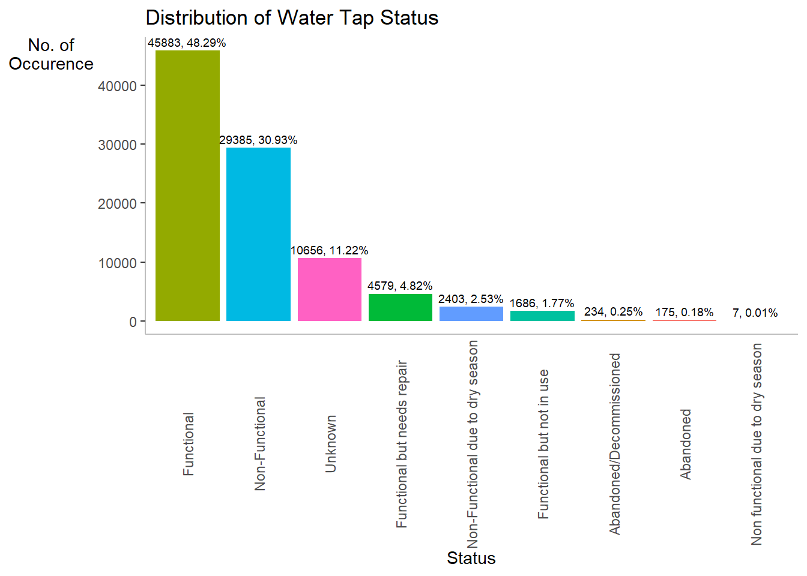
ggplot(data= nigeriaT_sf,
aes(x= fct_infreq(water_tech))) +
geom_bar(aes(fill = water_tech), show.legend = FALSE) +
geom_text(stat = 'count',
aes(label= paste0(stat(count), ', ',
round(stat(count)/sum(stat(count))*100,
2), '%')), vjust= -0.5, size= 2.5) +
labs(y= 'No. of\nOccurence', x= 'Tap Technology',
title = "Distribution of Water Tap Technology") +
theme(axis.title.y= element_text(angle=0), axis.ticks.x= element_blank(),
panel.background= element_blank(), axis.line= element_line(color= 'grey'),
axis.text.x = element_text(angle = 90, vjust = 0.5))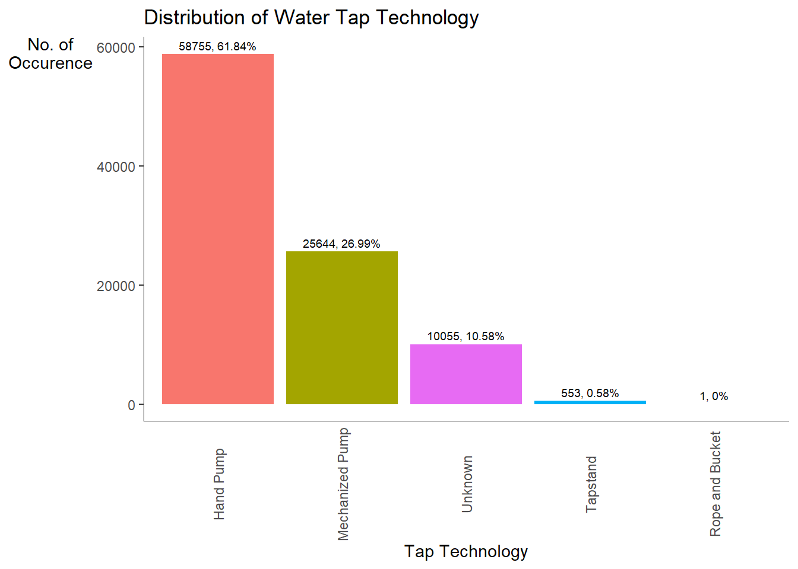
Since usage_capacity is in numeric, we will use the as.character() function to convert it into character class before plotting their distribution.
ggplot(data= nigeriaT_sf,
aes(x= fct_infreq(as.character(usage_capacity)))) +
geom_bar(aes(fill = as.character(usage_capacity)), show.legend = FALSE) +
geom_text(stat = 'count',
aes(label= paste0(stat(count), ', ',
round(stat(count)/sum(stat(count))*100,
2), '%')), vjust= -0.5, size= 2.5) +
labs(y= 'No. of\nOccurence', x= 'Tap Technology',
title = "Distribution of Water Tap Technology") +
theme(axis.title.y= element_text(angle=0), axis.ticks.x= element_blank(),
panel.background= element_blank(), axis.line= element_line(color= 'grey'),
axis.text.x = element_text(angle = 90, vjust = 0.5))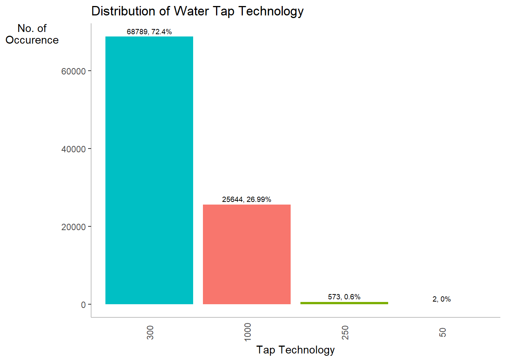
ggplot(data= nigeriaT_sf,
aes(x= fct_infreq(as.character(is_urban)))) +
geom_bar(aes(fill = as.character(is_urban)), show.legend = FALSE) +
geom_text(stat = 'count',
aes(label= paste0(stat(count), ', ',
round(stat(count)/sum(stat(count))*100,
2), '%')), vjust= -0.5, size= 2.5) +
labs(y= 'No. of\nOccurence', x= 'Urban Water Point?',
title = "Distribution of Rural Water Point") +
theme(axis.title.y= element_text(angle=0), axis.ticks.x= element_blank(),
panel.background= element_blank(), axis.line= element_line(color= 'grey'),
axis.text.x = element_text(angle = 90, vjust = 0.5))
Since this analysis is on the functionality of the water taps, we have to extract the number of functional and non-functional water taps from the nigeriaT_sf dataframe. The status column reveal the status of the water tap. We will now see what values are recorded by using the unique() function. From the result below, we can identify mainly four categories of statuses; Functional, Non-Functional, Abandoned, Unknown.
Note: For this analysis, abandoned water taps will be analysed under non-functional.
From the result below, we can identify a pattern to classify the status based on our criteria. By extracting the first word of the sentence before the punctuation, we will be able to extract the word; Unknown, Abandoned, Functional and Non. This will assist us in grouping these status.
unique(nigeriaT_sf$status)[1] "Unknown" "Functional"
[3] "Abandoned/Decommissioned" "Non-Functional"
[5] "Functional but not in use" "Functional but needs repair"
[7] "Abandoned" "Non functional due to dry season"
[9] "Non-Functional due to dry season"To replace the original values, we will use the gsub() function. A regular expression “([A-Za-z]+).*” is used to extract all letters and \\1 is used to back reference the first capturing group. The result below shows the unique values left within the column.
Instead of creating another data frame to store the new values, we will leverage on the filter function by using the single square bracket “[]” operator. The coordinates beings with a row position and that will be used for our filtering condition. R Dataframe. Since our water taps are point data, we will use st_intersects() to retrieve every geometry point that intersect with the polygon of the Nigeria ADM area, and subsequently use the function lengths() to retrieve the number of points that intersects with the polygon.
nigeria$pct_functional <- (lengths(st_intersects(nigeria, nigeriaT_sf[nigeriaT_sf$status == "Functional",]))/lengths(st_intersects(nigeria, nigeriaT_sf)))
nigeria$pct_nonfunctional <- (lengths(st_intersects(nigeria, nigeriaT_sf[nigeriaT_sf$status == "Non",])) + lengths(st_intersects(nigeria, nigeriaT_sf[nigeriaT_sf$status == "Abandoned",])))/(lengths(st_intersects(nigeria, nigeriaT_sf)))
nigeria$functional <- lengths(st_intersects(nigeria, nigeriaT_sf[nigeriaT_sf$status == "Functional",]))
nigeria$nonfunctional <- lengths(st_intersects(nigeria, nigeriaT_sf[nigeriaT_sf$status == "Non",])) + lengths(st_intersects(nigeria, nigeriaT_sf[nigeriaT_sf$status == "Abandoned",]))
nigeria$wp_total <- lengths(st_intersects(nigeria,nigeriaT_sf))Similar to the way we compute the ratio of functional and non-functional water point, we will extract the percentage of the different water technology within each region. We will not compute the percentage of Rope and Bucket since there is only 1 observation and Unknown pump technology.
nigeria$pct_mechpump <- (lengths(st_intersects(nigeria, nigeriaT_sf[nigeriaT_sf$water_tech == "Mechanized Pump",])))/(lengths(st_intersects(nigeria, nigeriaT_sf)))
nigeria$pct_handpump <- (lengths(st_intersects(nigeria, nigeriaT_sf[nigeriaT_sf$water_tech == "Hand Pump",]))/lengths(st_intersects(nigeria, nigeriaT_sf)))From the earlier result, we know that there is only 4 unique variables (50, 250, 300 and 1000). But these variables are currently saved as numeric object. Since we want to classify them as a unique identifier rather than a continuous variable, we will convert them to characters using the as.character() function. Lastly, from the distribution, 50 does not seem to have too many observations and therefore will be excluded from the analysis. 250 and 300 will also be combined to form an object of <1000 utilisation.
nigeriaT_sf$usage_capacity <- as.character(nigeriaT_sf$usage_capacity )
nigeria$pct_1000M <- (lengths(st_intersects(nigeria, nigeriaT_sf[nigeriaT_sf$usage_capacity == "1000",]))/lengths(st_intersects(nigeria, nigeriaT_sf)))
nigeria$pct_1000L <- (lengths(st_intersects(nigeria, nigeriaT_sf[nigeriaT_sf$usage_capacity == "300",])) + lengths(st_intersects(nigeria, nigeriaT_sf[nigeriaT_sf$usage_capacity == "250",])))/(lengths(st_intersects(nigeria, nigeriaT_sf))) To extract the ratio of Rural Water Point, we will retrieve the number of water point that is_urban == FALSE and divide by the total number of water point in that region.
Overused water point is calculated using the usage_capacity and the water_point_population. We will first compute the pecentage overused for each water point, subsequently, using the group_by and summarise function to retrieve the mean of the overuse percentage by region.
overuse <- nigeriaT_sf %>%
mutate (pct_overuse = (water_point_population/as.numeric(usage_capacity))*100) %>%
group_by(shapeName) %>%
summarise (avg_pct_overuse = mean(pct_overuse)) %>%
st_drop_geometry() %>%
ungroup()Next, we will use the left_join() function to join the nigeria dataframe with the overused data. For areas without any water taps, my assumption is that these areas do not need water taps for many possible reasons (lack of habitat, urbanised areas, etc), and therefore will be excluded from the analysis. I use the filter() function to remove areas without any water taps and mutate() function to create two new columns that shows the percentage of functional and non-functional water points over the total water point in the area. (Including unknown water point status)
nigeria <- nigeria %>%
left_join(overuse,by="shapeName") %>%
filter (wp_total != 0) %>%
select(-wp_total)We will use the summary function to retrieve statistical information of each column.
summary(nigeria) shapeName pct_functional pct_nonfunctional functional
Length:761 Min. :0.0000 Min. :0.0000 Min. : 0.00
Class :character 1st Qu.:0.3333 1st Qu.:0.2211 1st Qu.: 18.00
Mode :character Median :0.4792 Median :0.3559 Median : 47.00
Mean :0.5070 Mean :0.3654 Mean : 68.51
3rd Qu.:0.6749 3rd Qu.:0.5082 3rd Qu.: 88.00
Max. :1.0000 Max. :1.0000 Max. :752.00
nonfunctional pct_mechpump pct_handpump pct_1000M
Min. : 0.00 Min. :0.0000 Min. :0.0000 Min. :0.0000
1st Qu.: 14.00 1st Qu.:0.1250 1st Qu.:0.1860 1st Qu.:0.1250
Median : 34.00 Median :0.3193 Median :0.5255 Median :0.3193
Mean : 42.31 Mean :0.3818 Mean :0.4956 Mean :0.3818
3rd Qu.: 61.00 3rd Qu.:0.5843 3rd Qu.:0.7857 3rd Qu.:0.5843
Max. :278.00 Max. :1.0000 Max. :1.0000 Max. :1.0000
pct_1000L pct_rural avg_pct_overuse geometry
Min. :0.0000 Min. :0.0000 Min. : 0.0 MULTIPOLYGON :761
1st Qu.:0.4157 1st Qu.:0.5922 1st Qu.: 182.7 epsg:26391 : 0
Median :0.6807 Median :0.8717 Median : 310.7 +proj=tmer...: 0
Mean :0.6182 Mean :0.7395 Mean : 511.8
3rd Qu.:0.8750 3rd Qu.:1.0000 3rd Qu.: 587.6
Max. :1.0000 Max. :1.0000 Max. :12064.4 To visualise all the distribution easily, we will first use the melt() function from reshape2 to convert the data table to long format. Next, we will visualise the distribution using a density plot and facet_wrap by each variable. To remove the scientific notation from the axes, we will adjust the scale by inputting labels = scales::comma.
nigeria_density_plot <- nigeria %>%
st_drop_geometry() %>%
melt()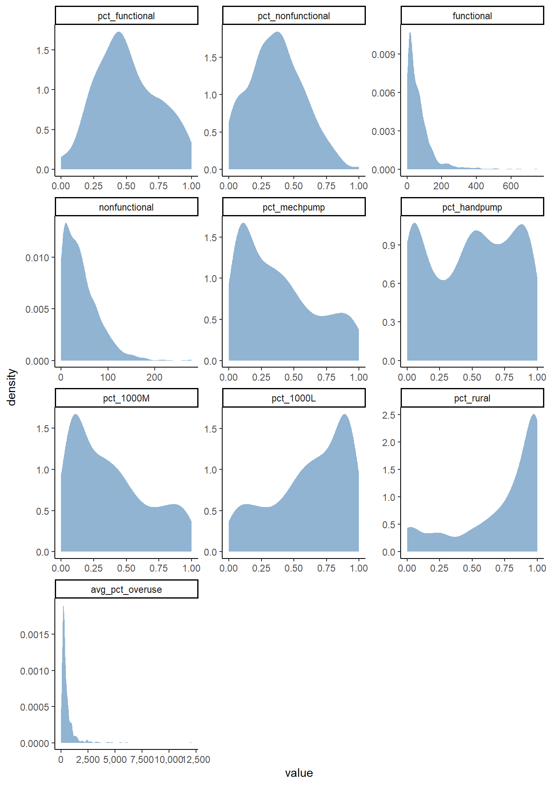
From the distribution, we can identify the variables does not conform to Gaussian distribution and we should perform normalization or standardisation before proceeding with our analysis.
When clustering variables are collinear, certain variables are given more weight than others. Two variables that are highly correlated indicate the same notion. However, because that notion is now represented twice in the data, it receives double the weight of all other variables. The ultimate solution is likely to be tilted toward that notion, which might be a problem if not foreseen. Therefore there is a need to check for Collinearity before conducting cluster analysis. We will use the cor() and corrplot.mixed function from the corrplot package to visualise and identify highly correlated variables.
nigeria$functional <- as.numeric(nigeria$functional)
nigeria$nonfunctional <- as.numeric(nigeria$nonfunctional)
nigeria_var <- nigeria %>%
st_drop_geometry()
cluster_vars.cor = cor(nigeria_var[,2:11])
corrplot.mixed(cluster_vars.cor,
lower = "ellipse",
upper = "number",
tl.pos = "lt",
diag = "l",
tl.col = "black")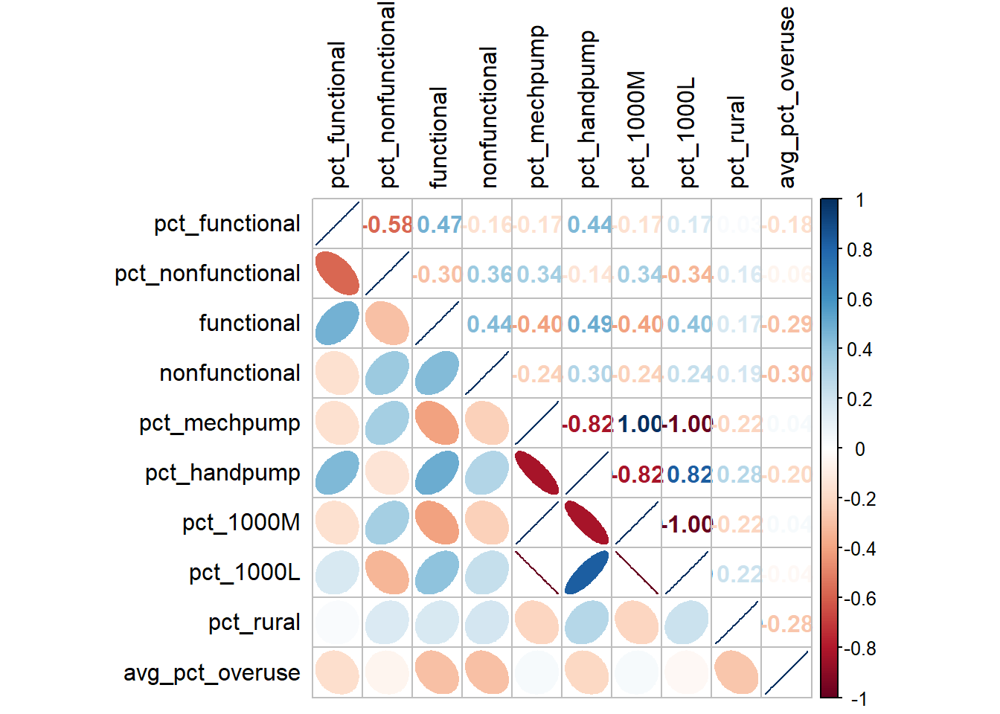
From the result above, we can identify 4 variables that are highly correlated. We will now choose to only retain 1 (pct_mechpump) for the analysis. We will create another dataframe to store all the variables required for the subsequent cluster analysis.
nigeria <- nigeria %>%
select(-pct_handpump, -pct_1000M, -pct_1000L)
nigeria_cluster_var <- nigeria %>%
st_drop_geometry()Since the dataframe should only consist of variables used for the clustering, the shapeName should now be an identifier for each row. We will use the row.names() function to set the id for each row using their respective shapeName and remove the shapeName column from the dataframe.
Larger variances between data points of input variables increases the model’s results’ uncertainty.
Machine learning models assign weights to input variables based on data points and output inferences. If the difference between the data points is large, the model will need to give the points more weight, and the model with a large weight value is generally unstable in the end. This implies that the model may produce bad results or perform poorly during training. Therefore, we will have to ensure our variables are scaled if we were to perform any distance-based algorithm such as K-means Clustering. To scale all the columns, we will use mutate_at() to select all the columns, and perform scaling through the scale() function.
Hierarchical clustering, also known as hierarchical cluster analysis or HCA, is another unsupervised machine learning approach used to sort unlabeled datasets into clusters.
The dendrogram is a tree-shaped structure that we construct in this approach to develop the hierarchy of clusters.
The hierarchical clustering technique has two approaches:
We will now create the distance matrix using the dist() function. Since we have multiple dimensions to the data, we will use the Manhattan distance to compute the distance matrix instead of the standard Eucluidean distance.
proxmat <- dist(nigeria_cluster_var, method = 'manhattan')We will only use the Gap Statistic Method to determine the optimal cluster. The clusGap() function from the cluster package will be used to calculate the goodness of the clustering measure.
gap_stat <- clusGap(nigeria_cluster_var,
FUN = hcut,
nstart = 25,
K.max = 10,
B = 50)
# Print the result
print(gap_stat, method = "firstmax")Clustering Gap statistic ["clusGap"] from call:
clusGap(x = nigeria_cluster_var, FUNcluster = hcut, K.max = 10, B = 50, nstart = 25)
B=50 simulated reference sets, k = 1..10; spaceH0="scaledPCA"
--> Number of clusters (method 'firstmax'): 4
logW E.logW gap SE.sim
[1,] 6.470009 7.545740 1.075731 0.007361406
[2,] 6.361211 7.452901 1.091690 0.012434692
[3,] 6.269918 7.390535 1.120617 0.012058076
[4,] 6.185244 7.338807 1.153563 0.010242376
[5,] 6.155719 7.294504 1.138785 0.010224412
[6,] 6.106019 7.255521 1.149502 0.009719880
[7,] 6.067774 7.220190 1.152416 0.009033557
[8,] 6.027122 7.189133 1.162011 0.008551612
[9,] 5.986136 7.161042 1.174906 0.008710675
[10,] 5.953721 7.135503 1.181781 0.009210229We will use the fviz_gap_stat() function to visualise the gap statistics results.
fviz_gap_stat(gap_stat)
From the above plot, we can conclude that the optimal number of cluster for the Hierarchical Clustering Algorithm is 4.
To compute the Hierarchical Cluster, we will use the hclust() function from R stats. The hclust() uses the Agglomerative approach to compute the cluster. There are 8 different clustering algorithm supported by the function: ward.D, ward.D2, single, complete, average(UPGMA), mcquitty(WPGMA), median(WPGMC) and centroid(UPGMC). To select the optimal algorithm, we will use the agnes() function from the cluster package.
average single complete ward
0.9564875 0.9246884 0.9633398 0.9831761 From the above result, the ward algorithm will produce the optimal cluster coefficient and therefore will be use for this analysis.
Using the hclust() function, we will compute the Hierarchical Cluster and visualise the clusters on a dendrogram using the rect.hclust() function. Based on the plot below, we can clearly identify 4 cluster but is unable to understand which area belongs to which cluster. We will subsequently use another visualisation method to visualise the output.
set.seed(1234)
h_clust_ward <- hclust(proxmat, method = 'ward.D')
plot(h_clust_ward, cex = 0.5)
rect.hclust(h_clust_ward,
k = 4,
border = 2:5)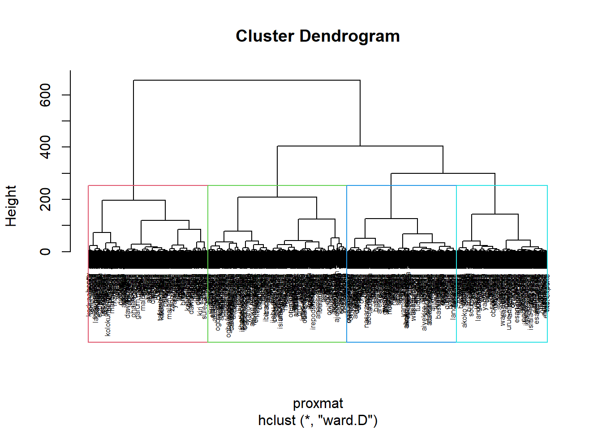
We can conduct a quick summary of the cluster by binding the clusters to the nigeria dataframe using cbind(). To extract the 4 cluster, the cutree() function is used.
The code chunk below generates a quick summary of the average values of all the variables within the cluster.
nigeria %>%
group_by(HR_Cluster) %>%
summarise_all("mean")Simple feature collection with 4 features and 9 fields
Geometry type: MULTIPOLYGON
Dimension: XY
Bounding box: xmin: 28879.72 ymin: 30292.37 xmax: 1342613 ymax: 1094244
Projected CRS: Minna / Nigeria West Belt
# A tibble: 4 × 10
HR_Cluster shapeName pct_functional pct_nonfunctional functional nonfunctional
<chr> <dbl> <dbl> <dbl> <dbl> <dbl>
1 1 NA 0.387 0.333 30.9 26.3
2 2 NA 0.313 0.638 25.3 49.3
3 3 NA 0.488 0.388 86.9 71.2
4 4 NA 0.811 0.174 128. 29.0
# … with 4 more variables: pct_mechpump <dbl>, pct_rural <dbl>,
# avg_pct_overuse <dbl>, geometry <MULTIPOLYGON [m]>Using the qtm() function, we plot the Nigeria map based on their designated cluster.
qtm(nigeria, "HR_Cluster")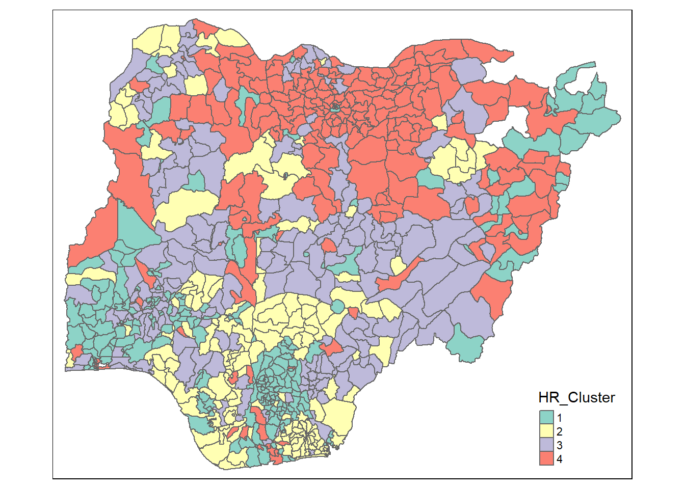
To better understand the distribution of values based on the different cluster, we will use the ggparcoord() function from the GGally package. The ggparcoord() visualisation provide different scaling methods to the variables such as: Min-Max(uniminmax), Z-Score (std) and many others. For our visualisation, we will be using the Z-score Normalization to visualise the distribution of data. The facet_grid() function is used to seperate the different clusters by their grids.
ggparcoord(nigeria,
columns = 2:8,
showPoints = TRUE,
title = "Parallel Coordinate Plot for the Nigeria Attributes using Hierarchical Clustering",
groupColumn = "HR_Cluster",
alphaLines = 0.3,
scale="std",
boxplot = TRUE
) +
scale_color_viridis(discrete=TRUE) +
theme_ipsum()+
theme(
plot.title = element_text(size=10),
axis.text.x = element_text(size = 6)
) +
facet_grid(~HR_Cluster)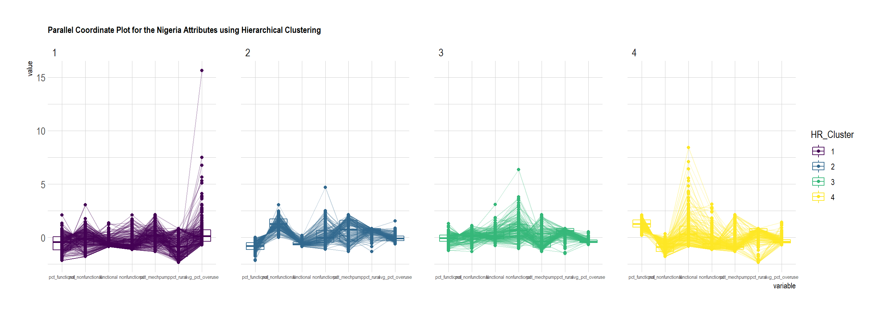
Based on the parallel coordinates plot, we can infer that Cluster 2 should be an area of concern with a higher average of pct_nonfunctional compare to pct_functional. The next area of concern could be Cluster 1 with also a higher average of pct_nonfunctional than pct_functional complemented with a high average of pct_overuse. We will substantiate all the claims in the subsequent section.
K-means clustering is a straightforward unsupervised learning approach for grouping issues. It employs a straightforward approach for categorizing a given data set into a specific number of clusters denoted by the letter “k.” The clusters are then positioned as points, and all observations or data points are associated with the nearest cluster, computed, modified, and the process is repeated until the desired result is obtained. K-Means clustering is also often known as a Partition Clustering Method. We will now analyse the difference between K-means and Hierarchical Clustering.
Similar to Hierarchical Clustering, we will use the clusGap() function to obtain the optimal cluster value.
gap_stat <- clusGap(nigeria_cluster_var, FUN = kmeans, nstart = 25,
K.max = 12, B = 50)
fviz_gap_stat(gap_stat)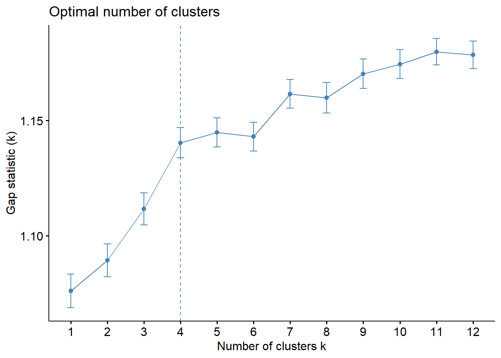
From the above plot, we can conclude that the optimal number of cluster for the K-Means Clustering Algorithm is 4.
Using the kmeans() function, we will compute the k-means results.
We will then have a quick summary on the cluster by first binding the new cluster column to the Nigeria data frame, then the summarise_all function to display the average of each variables based on their cluster.
nigeria <- nigeria %>%
mutate(KM_Cluster = as.factor(final_kmeans$cluster))The code chunk below generates a quick summary of the average values of all the variables within the cluster.
nigeria %>%
group_by(KM_Cluster) %>%
summarise_all("mean")Simple feature collection with 4 features and 10 fields
Geometry type: MULTIPOLYGON
Dimension: XY
Bounding box: xmin: 28879.72 ymin: 30292.37 xmax: 1342613 ymax: 1094244
Projected CRS: Minna / Nigeria West Belt
# A tibble: 4 × 11
KM_Cluster shapeName pct_functional pct_nonfunctional functional nonfunctional
<fct> <dbl> <dbl> <dbl> <dbl> <dbl>
1 1 NA 0.479 0.240 32.3 17.3
2 2 NA 0.799 0.177 127. 26.7
3 3 NA 0.443 0.435 89.8 83.1
4 4 NA 0.340 0.551 19.9 29.9
# … with 5 more variables: pct_mechpump <dbl>, pct_rural <dbl>,
# avg_pct_overuse <dbl>, HR_Cluster <dbl>, geometry <MULTIPOLYGON [m]>Using the qtm() function, we plot the Nigeria map based on their designated K-means cluster.
qtm(nigeria,fill = "KM_Cluster")
We will now visualise the variables using the ggparcoord() function.
ggparcoord(nigeria,
columns = 2:8,
showPoints = TRUE,
title = "Parallel Coordinate Plot for the Nigeria Attributes",
groupColumn = "KM_Cluster",
alphaLines = 0.3,
scale="std",
boxplot = TRUE
) +
scale_color_viridis(discrete=TRUE) +
theme_ipsum()+
theme(
plot.title = element_text(size=10),
axis.text.x = element_text(size = 6)
) +
facet_grid(~KM_Cluster)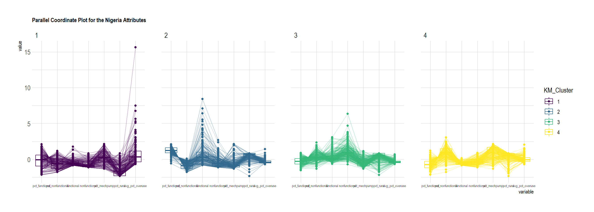
From the above results, we can infer that Cluster 3 and Cluster 4 are areas of concerns with a higher average of pct_nonfunctional compared to pct_functional. The most significant difference is that despite having a higher average of pct_overuse, Cluster 1 have a higher pct_functional compared to pct_nonfunctional.
In order to construct clusters, the PAM algorithm searches a data set for k representative objects (k medoids) and assigns each object to the closest medoid. Its goal is to minimize the sum of dissimilarities between objects in a cluster and the cluster’s center (medoid). It is regarded to be a more robust variant of k-means since it is less sensitive to outliers.
Similar to K-means Clustering, we will use the clusGap() function to obtain the optimal cluster value.
PAM Clustering do not require the nstart component within the clusGap() function.
gap_stat <- clusGap(nigeria_cluster_var, FUN = pam,
K.max = 12, B = 50)
fviz_gap_stat(gap_stat)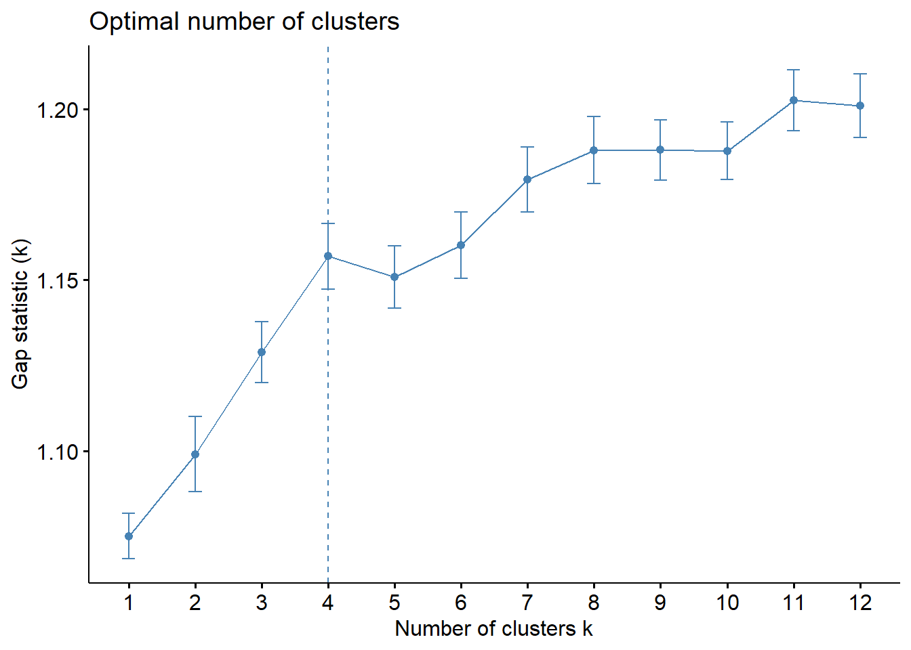
From the above plot, we can conclude that the optimal number of cluster for the PAM Clustering Algorithm is 4.
Using the pam() function, we will compute the PAM results. Since we have identified earlier to use the manhattan distance instead of euclidean distance, the pam() function require an input on the distance metric using the metric variable. We will also use the manhattan distance metric to compute our PAM cluster.
set.seed(1234)
final_pam <- pam(nigeria_cluster_var, 4, metric = "manhattan")We will then have a quick summary on the cluster by first binding the new cluster column to the Nigeria data frame, then the summarise_all function to display the average of each variables based on their cluster.
nigeria <- nigeria %>%
mutate(PAM_Cluster = as.factor(final_pam$cluster))
nigeria %>%
group_by(PAM_Cluster) %>%
summarise_all("mean")Simple feature collection with 4 features and 11 fields
Geometry type: MULTIPOLYGON
Dimension: XY
Bounding box: xmin: 28879.72 ymin: 30292.37 xmax: 1342613 ymax: 1094244
Projected CRS: Minna / Nigeria West Belt
# A tibble: 4 × 12
PAM_Cluster shapeName pct_functional pct_nonfunction… functional nonfunctional
<fct> <dbl> <dbl> <dbl> <dbl> <dbl>
1 1 NA 0.437 0.274 26.8 18.1
2 2 NA 0.326 0.612 19.5 34.5
3 3 NA 0.796 0.163 127. 25.4
4 4 NA 0.466 0.424 89.6 78.9
# … with 6 more variables: pct_mechpump <dbl>, pct_rural <dbl>,
# avg_pct_overuse <dbl>, HR_Cluster <dbl>, geometry <MULTIPOLYGON [m]>,
# KM_Cluster <dbl>Using the qtm() function, we plot the Nigeria map based on their designated PAM cluster.
qtm(nigeria,fill = "PAM_Cluster")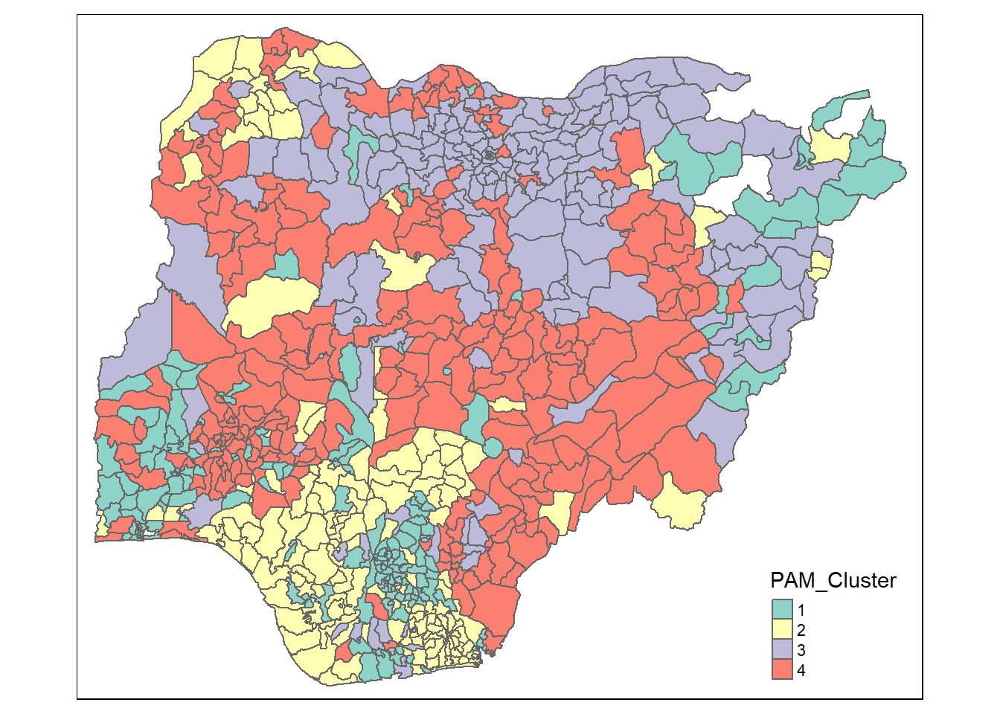
We will now visualise the variables using the ggparcoord() function.
ggparcoord(nigeria,
columns = 2:8,
showPoints = TRUE,
title = "Parallel Coordinate Plot for the Nigeria Attributes",
groupColumn = "PAM_Cluster",
alphaLines = 0.3,
scale="std",
boxplot = TRUE
) +
scale_color_viridis(discrete=TRUE) +
theme_ipsum()+
theme(
plot.title = element_text(size=10),
axis.text.x = element_text(size = 6)
) +
facet_grid(~PAM_Cluster)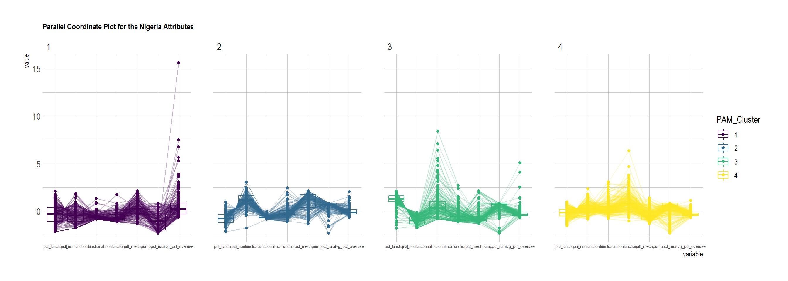
From the above results, we can infer that Cluster 2 and Cluster 4 are areas of concerns with a higher average of pct_nonfunctional compared to pct_functional. These clusters also have a higher average of pct_rural which could infer that rural water points have higher percentage of being not functional. The most significant difference is that despite having a higher average of pct_overuse, Cluster 1 have a higher pct_functional compared to pct_nonfunctional.
We will now visualise the Nigeria base map with all the different clustering results using tmap. Based on the plot below, we can generally identify that the southern region are the region that are area of concerns based on their pct_nonfunctional and pct_functional. This result is consistent among all the different clustering algorithm.
tmap_mode ("plot")
HC_Clust <- tm_shape (nigeria) +
tm_polygons("HR_Cluster",
title = "Hierarchical Cluster") +
tm_layout(main.title = "Distribution of Hierarchical Cluster by ADM2",
main.title.position = "center",
main.title.size = 0.7,
main.title.fontface = "bold",
legend.height = 0.45,
legend.width = 0.35,
frame = TRUE) +
tm_borders(alpha = 0.5)
K_Clust <- tm_shape (nigeria) +
tm_polygons("KM_Cluster",
title = "K-Means Cluster") +
tm_layout(main.title = "Distribution of K-Means Cluster by ADM2",
main.title.position = "center",
main.title.size = 0.7,
main.title.fontface = "bold",
legend.height = 0.45,
legend.width = 0.35,
frame = TRUE) +
tm_borders(alpha = 0.5)
PAM_Clust <- tm_shape (nigeria) +
tm_polygons("PAM_Cluster",
title = "PAM Cluster") +
tm_layout(main.title = "Distribution of PAM Cluster by ADM2",
main.title.position = "center",
main.title.size = 0.7,
main.title.fontface = "bold",
legend.height = 0.45,
legend.width = 0.35,
frame = TRUE) +
tm_borders(alpha = 0.5)
tmap_arrange(HC_Clust, K_Clust, PAM_Clust, ncol = 3, asp = 1)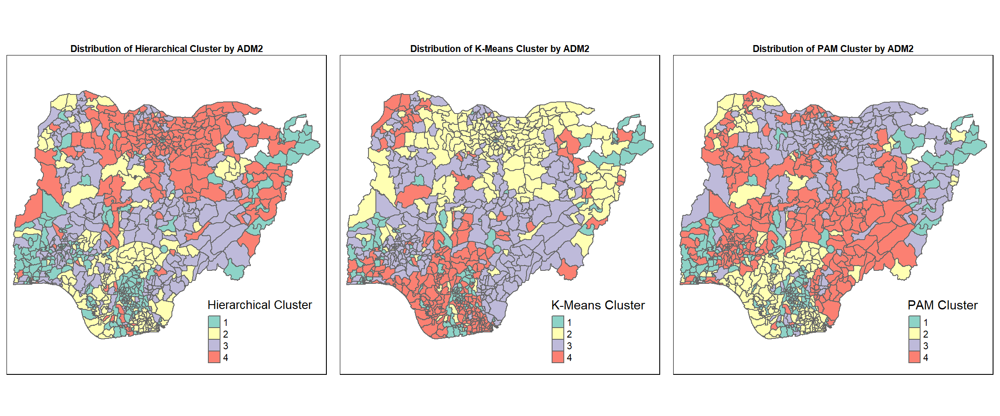
Clustering data is well-trodden territory, and many approaches apply to geographical data as well. The advantage of spatially limited approaches is that it requires spatial objects in the same cluster to be geographically related. This has a number of benefits in real-world applications that require breaking geographies into discrete sections (regionalization), such as building communities, planning areas, amenity zones, logistical units, or even setting up experiments with real-world geographic limits.
In this section, we will explore 3 different spatially constrained clustering algorithm namely:
The SKATER algorithm is based on a connectivity graph to express spatial relationships between neighboring regions, with each area represented by a node and edges representing connections between areas. The dissimilarity between neighboring areas is used to compute edge costs.
We will use the poly2nb function to construct neighbours list based on the regions with contiguous boundaries. Based on the documentation, user will be able to pass a queen argument that takes in True or False. The argument the default is set to TRUE, that is, if you don’t specify queen = FALSE this function will return a list of first order neighbours using the Queen criteria.
nigeria_nb <- poly2nb(nigeria, queen=TRUE)
summary(nigeria_nb)Neighbour list object:
Number of regions: 761
Number of nonzero links: 4348
Percentage nonzero weights: 0.750793
Average number of links: 5.713535
Link number distribution:
1 2 3 4 5 6 7 8 9 10 11 12 14
4 16 57 122 177 137 121 71 39 11 4 1 1
4 least connected regions:
136 497 513 547 with 1 link
1 most connected region:
496 with 14 linksFrom the summary, we can identify 4 regions with only 1 neighbour and 1 region with 14 neighbours. The average number of neighbours per region is 5.
A connectivity graph takes a point and displays a line to each neighboring point. We are working with polygons at the moment, so we will need to get points in order to make our connectivity graphs. The most typically method for this will be polygon centroids. To retrieve the centroid of each area, we will use the st_centroid function.
coords <- st_centroid(st_geometry(nigeria))We will now plot and visualise the neighbours relationship for each region.
Using the nbcosts() function, we will calculate the distance between each node which is define as the cost of the edge. For each observation, this gives the pairwise dissimilarity between its values on the five variables and the values for the neighbouring observation (from the neighbour list). Basically, this is the notion of a generalised weight for a spatial weights matrix.
lcosts <- nbcosts(nigeria_nb, nigeria_cluster_var)We will now incorporate the cost into a weights object. This is done by using the nb2listw() function and setting the style to B.
nigeria_weight <- nb2listw(nigeria_nb,
lcosts,
style="B")
summary(nigeria_weight)Characteristics of weights list object:
Neighbour list object:
Number of regions: 761
Number of nonzero links: 4348
Percentage nonzero weights: 0.750793
Average number of links: 5.713535
Link number distribution:
1 2 3 4 5 6 7 8 9 10 11 12 14
4 16 57 122 177 137 121 71 39 11 4 1 1
4 least connected regions:
136 497 513 547 with 1 link
1 most connected region:
496 with 14 links
Weights style: B
Weights constants summary:
n nn S0 S1 S2
B 761 579121 10026.67 62271.18 675249.1We will now compute the minimal spanning tree which depicts a fully connected graph with only one neighbour per node. The MST is computed by the mstree() function from the spdep package.
nigeria_mst <- mstree(nigeria_weight)
head(nigeria_mst) [,1] [,2] [,3]
[1,] 284 43 1.0834428
[2,] 284 297 1.5171722
[3,] 297 185 1.0339759
[4,] 185 15 0.8213166
[5,] 15 322 1.3167224
[6,] 297 586 1.3700931The code chunk below compute the spatially constrained cluster using skater() of spdep package.
The skater() takes three mandatory arguments:
first two columns of the MST matrix (i.e. not the cost)
data matrix (to update the costs as units are being grouped)
number of cuts.
The cut is set to one less than the number of clusters. So, the value specified is not the number of clusters, but the number of cuts in the graph.
Using the table() function, we can retrieve the number of areas within each cluster.
ccs4 <- clust4$groups
table(ccs4)ccs4
1 2 3 4
430 120 134 77 We will then have a quick summary on the cluster by first binding the new cluster column to the Nigeria data frame, then the summarise_all function to display the average of each variables based on their cluster.
Simple feature collection with 4 features and 12 fields
Geometry type: GEOMETRY
Dimension: XY
Bounding box: xmin: 28879.72 ymin: 30292.37 xmax: 1342613 ymax: 1094244
Projected CRS: Minna / Nigeria West Belt
# A tibble: 4 × 13
Skater_Cluster shapeName pct_functional pct_nonfunctional functional
<fct> <dbl> <dbl> <dbl> <dbl>
1 1 NA 0.503 0.390 69.2
2 2 NA 0.725 0.208 152.
3 3 NA 0.339 0.389 16.8
4 4 NA 0.483 0.430 24.2
# … with 8 more variables: nonfunctional <dbl>, pct_mechpump <dbl>,
# pct_rural <dbl>, avg_pct_overuse <dbl>, HR_Cluster <dbl>, KM_Cluster <dbl>,
# PAM_Cluster <dbl>, geometry <GEOMETRY [m]>Using the qtm() function, we plot the Nigeria map based on their designated SKATER cluster.
qtm(nigeria, "Skater_Cluster")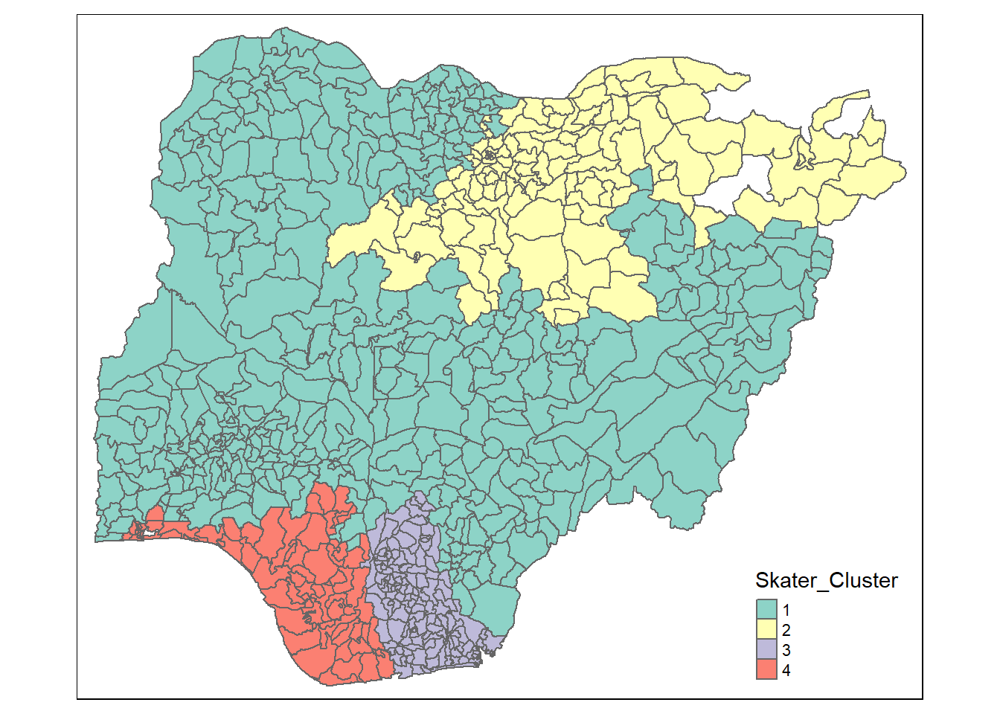
We will visualise the results using the ggparcoord() function.
ggparcoord(nigeria,
columns = 2:8,
showPoints = TRUE,
title = "Parallel Coordinate Plot of SKATER for the Nigeria Attributes",
groupColumn = "Skater_Cluster",
alphaLines = 0.3,
scale="std",
boxplot = TRUE
) +
scale_color_viridis(discrete=TRUE) +
theme_ipsum()+
theme(
plot.title = element_text(size=10),
axis.text.x = element_text(size = 6)
) +
facet_grid(~Skater_Cluster)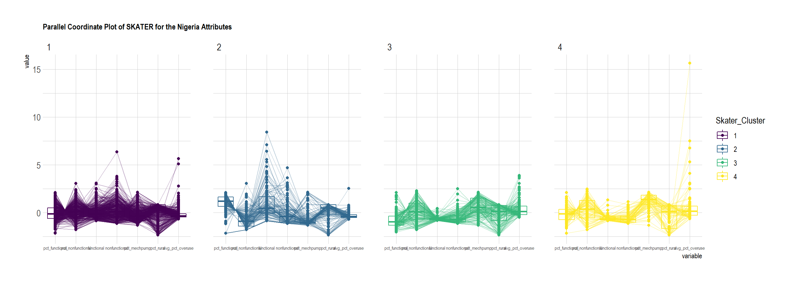
From the above results, we can infer that Cluster 3 and Cluster 4 are areas of concerns with a higher average of pct_nonfunctional compared to pct_functional. These clusters also have a higher average of pct_overuse and pct_mechpump which could infer that mech pump are placed in areas that areas that have higher population to water point.
In this section, we will conduct Spatially Constrained Hierarchical Clustering using the hclustgeo() function from the ClustGeo package. The ClustGeo implements a Ward-like hierarchical clustering algorithm including spatial/geographical constraints. It also includes a mixing parameter \(\alpha\) that will use to increases the spatial contiguity without deteriorating too much the quality of the solution based on the variables of interest.
Before we can performed spatially constrained hierarchical clustering, a spatial distance matrix will be derived by using st_distance() from the sf package.
as.dist() instead of as.matrix() is used to convert the data frame into matrix.
dist <- st_distance(nigeria, nigeria)
distmat <- as.dist(dist)To retrieve the optimal mixing parameter, we will use the choicealpha() function from ClustGeo package. From the results below, we can see that \(\alpha\) 0.2 produces the
set.seed(1234)
clustG <- hclustgeo(proxmat, distmat, alpha = 0.2)We will then have a quick summary on the cluster by first binding the new cluster column to the Nigeria data frame, then the summarise_all function to display the average of each variables based on their cluster. Similar to our unconstrained hierarchical cluster, we will use the cutree() function to retrieve 4 cluster based on the hierarchy.
Simple feature collection with 4 features and 13 fields
Geometry type: MULTIPOLYGON
Dimension: XY
Bounding box: xmin: 28879.72 ymin: 30292.37 xmax: 1342613 ymax: 1094244
Projected CRS: Minna / Nigeria West Belt
# A tibble: 4 × 14
HR_Spatial_Cluster shapeName pct_functional pct_nonfunctional functional
<chr> <dbl> <dbl> <dbl> <dbl>
1 1 NA 0.393 0.393 20.7
2 2 NA 0.454 0.442 71.4
3 3 NA 0.806 0.192 175.
4 4 NA 0.620 0.232 22.5
# … with 9 more variables: nonfunctional <dbl>, pct_mechpump <dbl>,
# pct_rural <dbl>, avg_pct_overuse <dbl>, HR_Cluster <dbl>, KM_Cluster <dbl>,
# PAM_Cluster <dbl>, Skater_Cluster <dbl>, geometry <MULTIPOLYGON [m]>Using the qtm() function, we plot the Nigeria map based on their designated Hierarchical Cluster.
qtm(nigeria, "HR_Spatial_Cluster")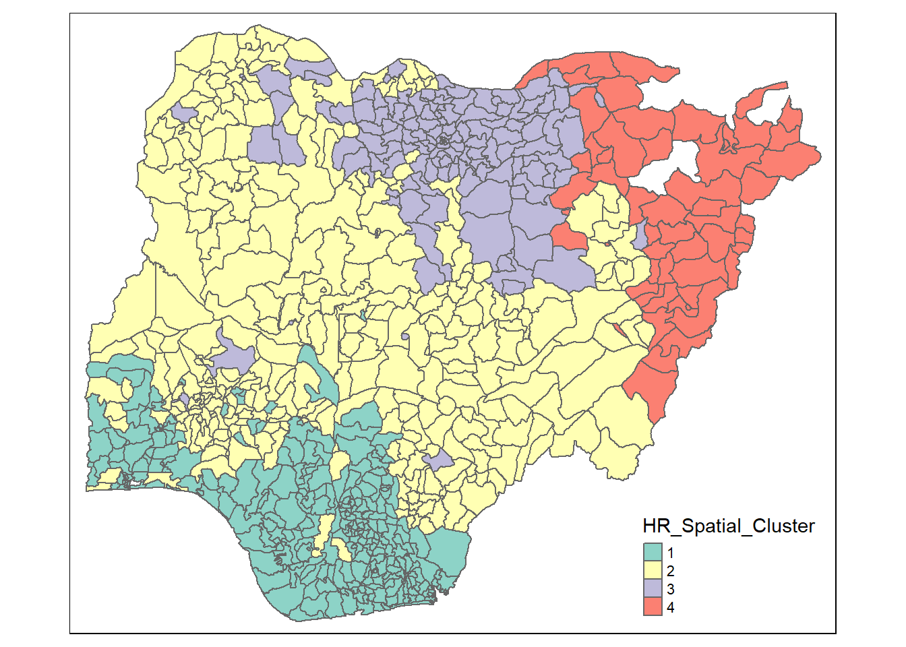
We will visualise the results using the ggparcoord() function.
ggparcoord(nigeria,
columns = 2:8,
showPoints = TRUE,
title = "Parallel Coordinate Plot for the Nigeria Attributes",
groupColumn = "HR_Spatial_Cluster",
alphaLines = 0.3,
scale="std",
boxplot = TRUE
) +
scale_color_viridis(discrete=TRUE) +
theme_ipsum()+
theme(
plot.title = element_text(size=10),
axis.text.x = element_text(size = 6)
) +
facet_grid(~HR_Spatial_Cluster)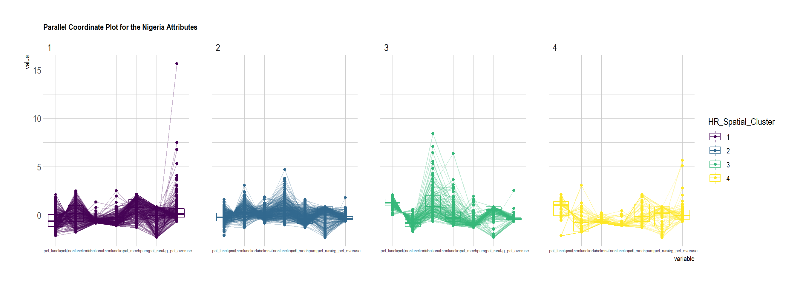
From the above results, we can infer that Cluster 1 with a higher average of pct_nonfunctional compared to pct_functional can be deemed as an area of concern. The cluster also have a higher average of pct_overuse. Cluster 3 and Cluster 4 are areas that are less of a concern with a higher average of pct_functional than pct_nonfunctional.
REDCAP starts from building a spanning tree with 4 different ways (single-linkage, average-linkage, ward-linkage and the complete-linkage). The single-linkage way leads to build a minimum spanning tree which is similar to SKATER. Then,REDCAP provides 2 different ways (first-order and full-order constraining) to prune the tree to find clusters. The first-order approach with a minimum spanning tree is exactly the same with SKATER.
In GeoDa and pygeoda, the following methods are provided: First-order and Single-linkage, Full-order and Complete-linkage, Full-order and Average-linkage, Full-order and Single-linkage and Full-order and Ward-linkage.
For this analysis, we will conduct the Full- Order and Complete-Linkage approach.
Before we compute the REDCAP cluster, we need to derive the weights in a weights class using the queen_weights() function from the sf package. Next we will use the redcap() function from the sf package that takes in 4 mandatory inputs:
For this approach, we will analyse with 6 cluster.
set.seed(1234)
nigeria_weights_sf <- queen_weights(nigeria)
nigeria_clusters <- redcap(6, nigeria_weights_sf, nigeria_cluster_var, "fullorder-completelinkage")Using the table() function, we can retrieve the number of areas within each cluster.
table(nigeria_clusters$Clusters)
1 2 3 4 5 6
405 140 105 92 17 2 We will then have a quick summary on the cluster by first binding the new cluster column to the Nigeria data frame, then the summarise_all function to display the average of each variables based on their cluster.
Simple feature collection with 6 features and 14 fields
Geometry type: GEOMETRY
Dimension: XY
Bounding box: xmin: 28879.72 ymin: 30292.37 xmax: 1342613 ymax: 1094244
Projected CRS: Minna / Nigeria West Belt
# A tibble: 6 × 15
RC_Cluster shapeName pct_functional pct_nonfunctional functional nonfunctional
<fct> <dbl> <dbl> <dbl> <dbl> <dbl>
1 1 NA 0.480 0.375 60.8 51.6
2 2 NA 0.745 0.252 125. 40.9
3 3 NA 0.291 0.438 15.3 24.8
4 4 NA 0.457 0.455 18.2 18.4
5 5 NA 0.831 0.169 401 75.5
6 6 NA 0.25 0.0625 2 0.5
# … with 9 more variables: pct_mechpump <dbl>, pct_rural <dbl>,
# avg_pct_overuse <dbl>, HR_Cluster <dbl>, KM_Cluster <dbl>,
# PAM_Cluster <dbl>, Skater_Cluster <dbl>, HR_Spatial_Cluster <dbl>,
# geometry <GEOMETRY [m]>Using the qtm() function, we plot the Nigeria map based on their designated REDCAP.
qtm(nigeria, "RC_Cluster")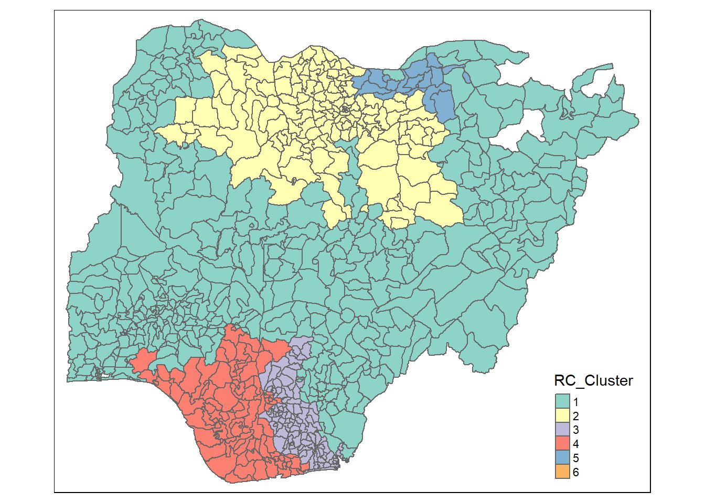
We will visualise the results using the ggparcoord() function.
ggparcoord(nigeria,
columns = 2:8,
showPoints = TRUE,
title = "Parallel Coordinate Plot of REDCAP for the Nigeria Attributes",
groupColumn = "RC_Cluster",
alphaLines = 0.3,
scale="std",
boxplot = TRUE
) +
scale_color_viridis(discrete=TRUE) +
theme_ipsum()+
theme(
plot.title = element_text(size=10),
axis.text.x = element_text(size = 6)
) +
facet_grid(~RC_Cluster)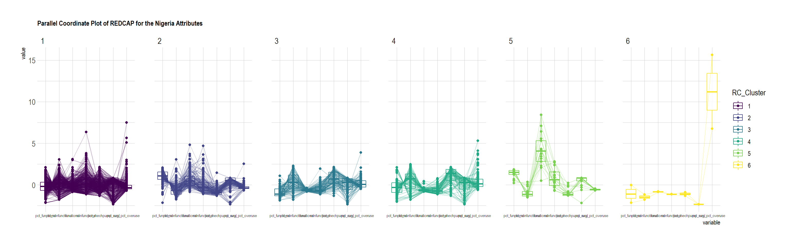
From the above results, we can infer that Cluster 3 and Cluster 4 with a higher average of pct_nonfunctional compared to pct_functional can be deemed as an area of concern. These cluster also have a higher average of pct_overuse and pct_mechpump. Cluster 1 and Cluster 2 are areas that are less of a concern with a higher average of pct_functional than pct_nonfunctional. Cluster 6 with only 2 observations seems to be an area of concern the highest average of pct_overuse.
We will now visualise the Nigeria base map with all the different clustering results using tmap. Based on the plot below, we can generally identify that the southern region are the highlighted as the same cluster and these regions are deemed area of concerns based on their pct_nonfunctional and pct_functional on the earlier results. This result is consistent among all the different spatially clustering algorithm.
tmap_mode ("plot")
SKATER_Clust <- tm_shape (nigeria) +
tm_polygons("Skater_Cluster",
title = "SKATER Cluster") +
tm_layout(main.title = "Distribution of SKATER Cluster by ADM2",
main.title.position = "center",
main.title.size = 0.7,
main.title.fontface = "bold",
legend.height = 0.45,
legend.width = 0.35,
frame = TRUE) +
tm_borders(alpha = 0.5)
SHC_Clust <- tm_shape (nigeria) +
tm_polygons("HR_Spatial_Cluster",
title = "Spatially Constrained Hierarchical Cluster") +
tm_layout(main.title = "Distribution of Spatially Constrained Hierarchical Cluster by ADM2",
main.title.position = "center",
main.title.size = 0.7,
main.title.fontface = "bold",
legend.height = 0.45,
legend.width = 0.35,
frame = TRUE) +
tm_borders(alpha = 0.5)
REDCAP_Clust <- tm_shape (nigeria) +
tm_polygons("RC_Cluster",
title = "REDCAP Cluster") +
tm_layout(main.title = "Distribution of REDCAP Cluster by ADM2",
main.title.position = "center",
main.title.size = 0.7,
main.title.fontface = "bold",
legend.height = 0.45,
legend.width = 0.35,
frame = TRUE) +
tm_borders(alpha = 0.5)
tmap_arrange(SKATER_Clust, SHC_Clust, REDCAP_Clust, ncol = 3, asp = 1)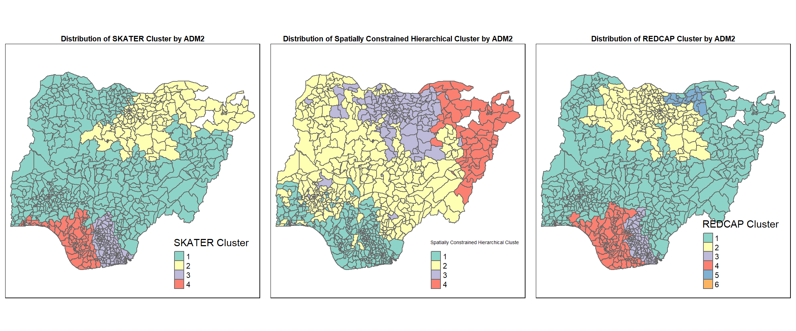
tmap_arrange(HC_Clust, K_Clust, PAM_Clust, SKATER_Clust, SHC_Clust, REDCAP_Clust, ncol = 3, asp = 1)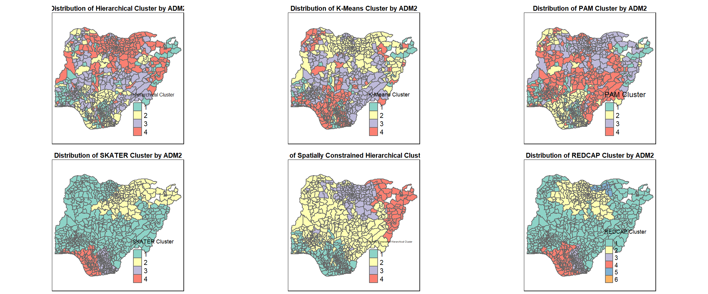
Before plotting the statistical plot, we will need to prepare the data frame to be able to group the different clusters as a group. We will have to pivot the dataframe from wide to long using the pivot_longer() function from dpylr. Once we have done that, we will change the class of the Cluster Type to factor and arrange the order of presentation (Traditional Clustering -> Spatially Constrainted Clustering).
nigeria_stats <- nigeria %>%
pivot_longer(
cols = (9:14),
names_to = "Cluster_Type",
values_to = "Cluster_Number"
) %>%
st_drop_geometry()
nigeria_stats$Cluster_Type <- factor(nigeria_stats$Cluster_Type, order = TRUE, levels = c("HR_Cluster", "KM_Cluster", "PAM_Cluster","Skater_Cluster","HR_Spatial_Cluster","RC_Cluster"))We will use the grouped_ggbetweenstats() from the ggstatsplot package to visualise the distribution of pct_nonfunctional and see if indeed the clusters have higher/lower areas with pct_nonfunctional.
From the plot below, we can see that clustering results from the traditional clustering provide better statistical prove that the areas identified earlier through the interpretation of the ggparcoord are statistically significant. Whereas the distribution from the spatially constrainted clustering despite having a p-value of < 0.05, not all areas identified above have a significant difference in their pct_nonfunctional.
grouped_ggbetweenstats(
data = nigeria_stats,
x = Cluster_Number,
y = pct_nonfunctional,
grouping.var = Cluster_Type,
p.adjust.method = "bonferroni",
palette = "default_jama",
package = "ggsci",
plotgrid.args = list(nrow = 2),
annotation.args = list(title = "Does the Percentage of Non-Functional Water Point Significantly different from each Cluster?")
)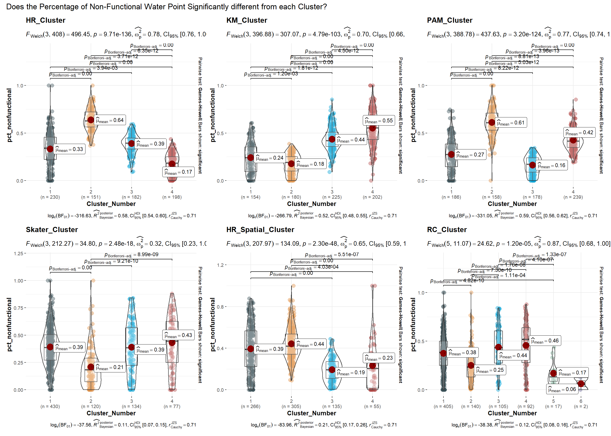
From our analysis, we can clearly identify the constraint of using spatially constrainted clustering with the areas having not so clearly define variables compared to other clusters. Traditional Clustering algorithm still provide better results in clearly defining the areas. But, spatially constrained clustering will be useful if there is a need to have concentrated resources/limited resources in a specific area, and therefore the clusters should be spatially connected instead of sparse.